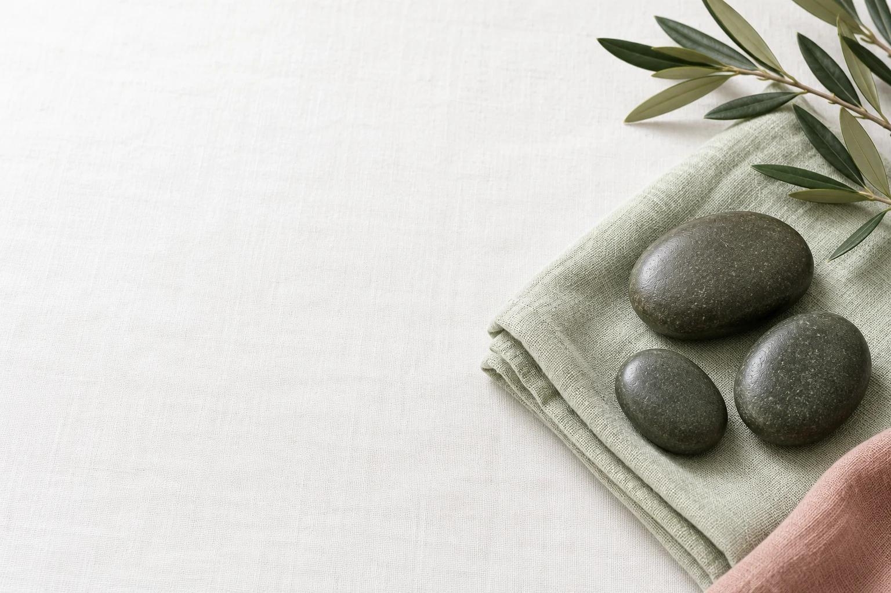
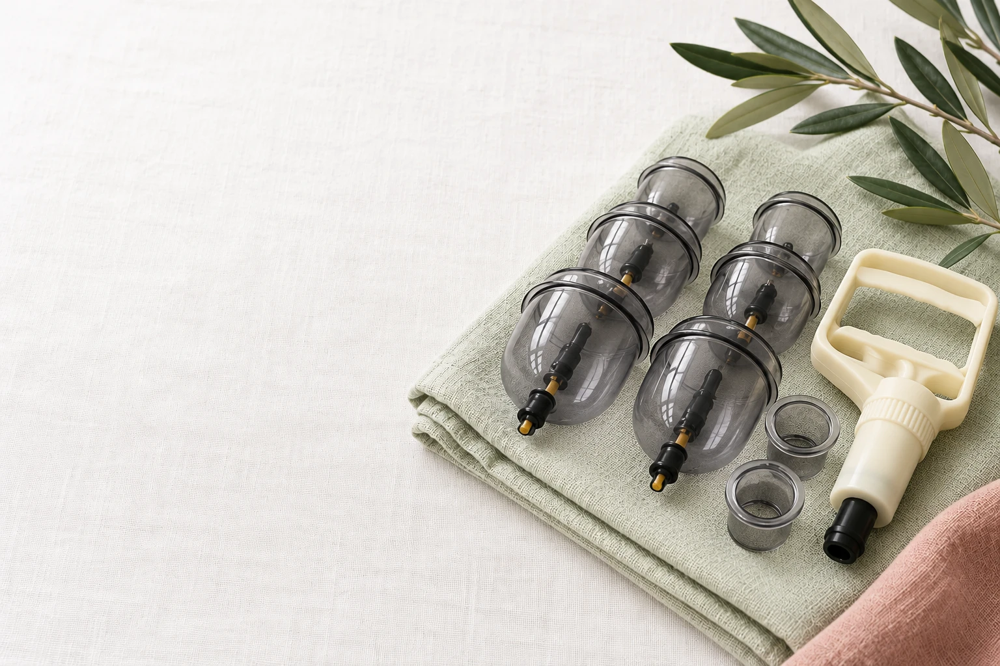
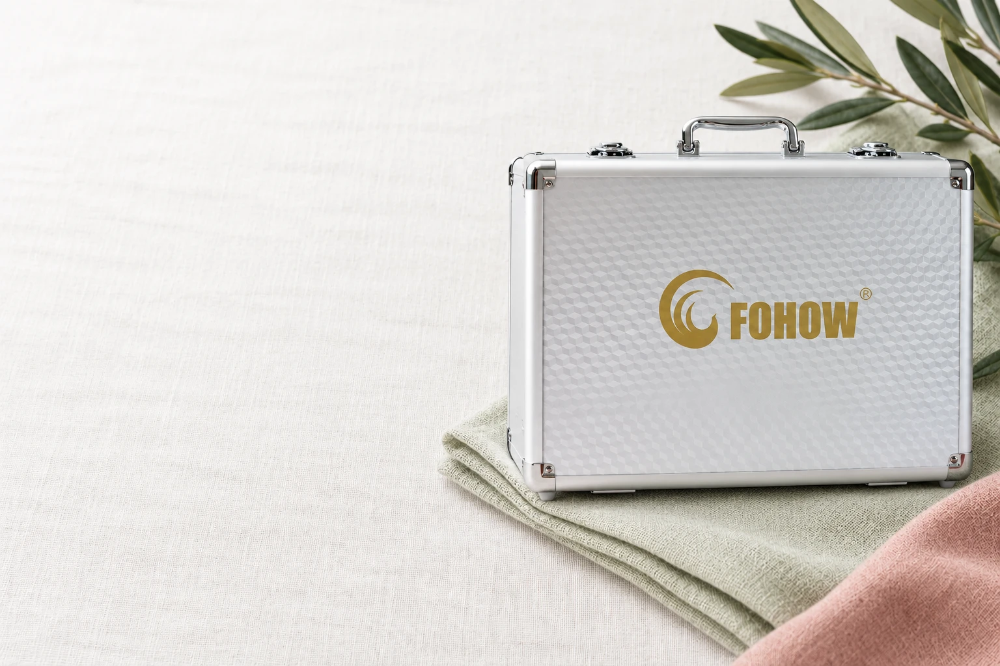

Сначала
человек.
Каждый приём начинаю с вашего запроса. Важно понять, с чем вы пришли, как чувствуете себя и чего ждёте от встречи.
Работаю со взрослыми и детьми, спортсменами и айтишниками.
лет практики в массаже
и реабилитации
лет повышения
квалификации
сертификатов
по направлениям массажа



Каждый приём начинаю с вашего запроса. Важно понять, с чем вы пришли, как чувствуете себя и чего ждёте от встречи.
Работаю со взрослыми и детьми, спортсменами и айтишниками.
28 лет практики и 10 лет повышения квалификации. Работаю в том числе со сложными случаями.
Продолжаю учиться: остеопатический подход, тайский массаж, массаж камнями и другие направления.
Методику выбираю под вас. Подходящий формат обсуждаем до сеанса.
Ручной массаж — всего тела или отдельных зон. Хиджама и аппаратный массаж — с учётом состояния и противопоказаний. Внимание к вам. Уважение к вашему запросу.
Для спортсменов и тех, кто ведёт активный образ жизни.
Когда спине и шее нужно внимание после рабочего дня.
Индивидуальная работа, в том числе в сложных случаях.
Можно выбрать массаж всего тела или уделить внимание отдельным зонам.
Если пока не знаете, с чего начать, расскажите мне о своём запросе. Формат обсудим до сеанса.
Обсудить по телефонуТрадиционная практика влажных банок: вакуум сочетается с поверхностными проколами кожи и кровопусканием. Доказательства лечебной эффективности ограничены. Перед процедурой обсуждаем состояние, риски и противопоказания.
Лицо, шея и декольте
Технику подбираю индивидуально: миофасциальный, скульптурирующий, миолифтинговый массаж, проработка триггеров, хиромассаж и другие техники.
Аппаратный массаж с использованием специальных перчаток. Формат и интенсивность подбираю индивидуально, с учётом вашего состояния и противопоказаний. Возможность сеанса обсуждаем заранее.
Показания
Банки и хиджама проводятся с учётом состояния и противопоказаний. После инфаркта, инсульта, травм и операций возможность массажа и допустимые нагрузки нужно согласовать с лечащим врачом. Массаж не заменяет назначенное лечение.
Хорошая работаначинается с уменияслушать.
София СерковаМожно просто позвонить.
А можно сначала прочитать здесь.